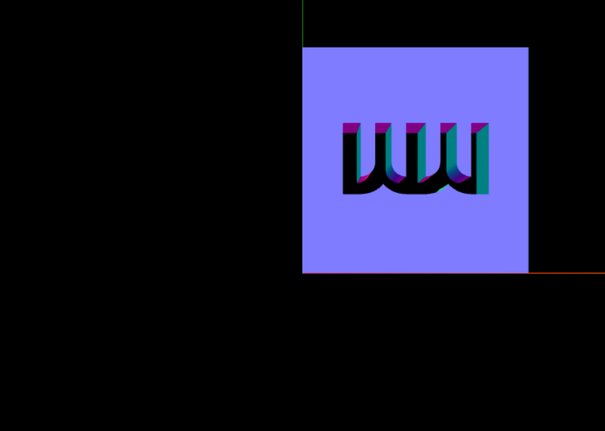
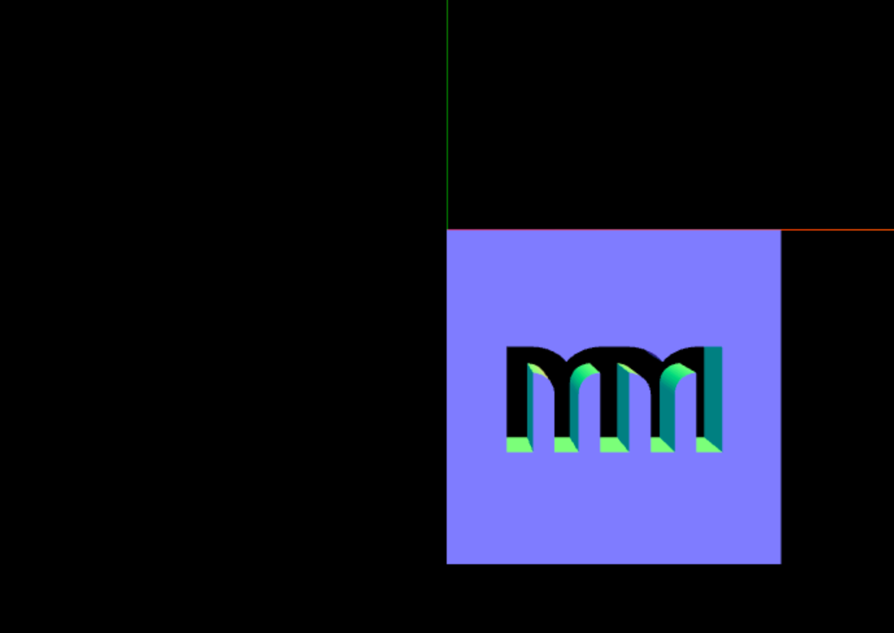
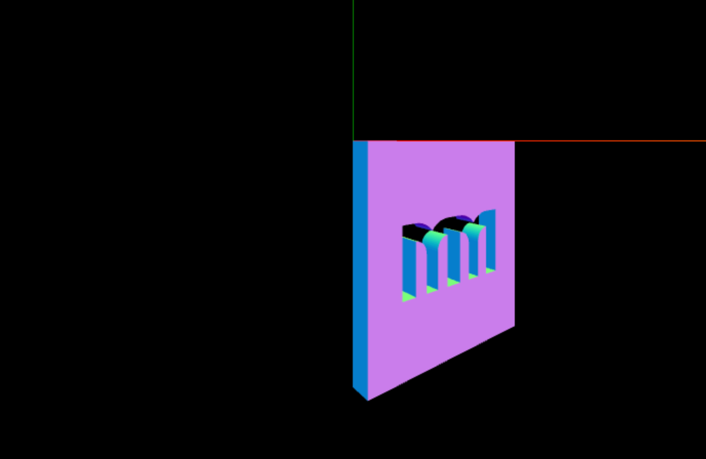
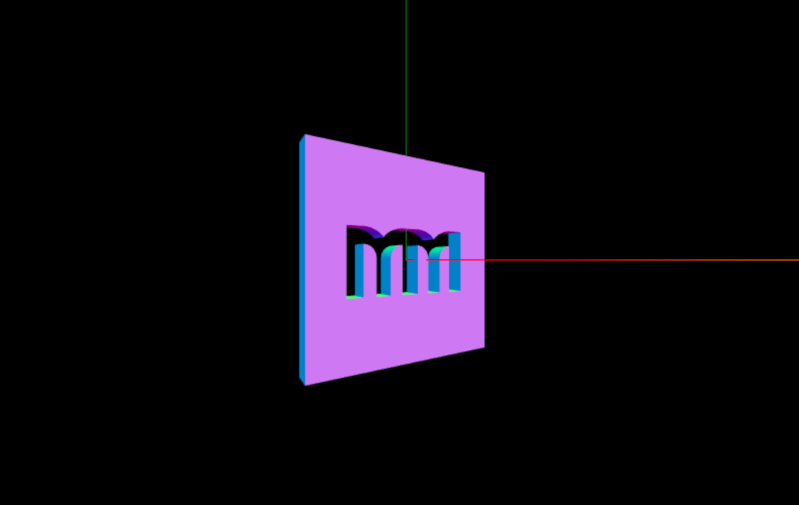

Update, September 2025 #
Replaced path.toShapes(true) with THREE.SVGLoader.createShapes(path) because toShapes misses some of the SVG-specific logic implemented in the loader. Thanks to forresto who pointed it out. Also updated the demo to use a fresh version of ThreeJS.
These days I'm playing with three.js again. I'm not an expert but I enjoy playing with graphics.
Conveniently, a friend of mine sent me this Dribble, and I thought it would be a perfect exercise to try making it. I still haven't done it, but I did some exploration on how to built it.
My plan was to draw the parallaxing layers as vectors, import it in three.js and use ExtrudeGeometry to give them a third dimension. To three.js ninjas this might be funny, but it took me some time.
I haven't found well documented way, plus there are a couple of gotchas. And that is the reason I want to share this process with you.
Before we start #
I'll assume you have a basic understanding of three.js, and how to setup a scene. If you are just starting with it, I recommend going through their excellent Getting Started guide first.
If you just want to see the end result, feel free to jump to the code or the live demo.
SVGLoader #
Three.js provides us with SVGLoader, but it is not the part of the main export. It is an addon, and can import it like this:
import { SVGLoader } from "three/addons/loaders/SVGLoader.js";
Like it's name suggest this class loads SVG from an URL and parses it into three.js entries. If you already have SVG markup as a string, it is easy to parse it, but it is also easy to miss how to do it in the documentation.
SVGLoader extends base Loader class, which contains .parse() method. That means we can do this:
// Get SVG's markup
const svgMarkup = document.querySelector('svg').outerHTML;
const loader = new SVGLoader();
const svgData = loader.parse(svgMarkup);
Now when we know how to get SVG data to three.js, let's try to extrude it.
Extrude #
You'll need a SVG, I used my logo:
To get to the shapes we can extrude, we need to parse the SVG. Get paths' data by calling .paths() method. It will return an array of ShapePaths. Finally to get an array of Shape objects we need to call SVGLoader.createShapes(path) method on which we can use ExtrudeGeometry on.
const svgMarkup = document.querySelector('svg').outerHTML;
const loader = new THREE.SVGLoader();
const svgData = loader.parse(svgMarkup);
// Group that will contain all of our paths
const svgGroup = new THREE.Group();
const material = new THREE.MeshNormalMaterial();
// Loop through all of the parsed paths
svgData.paths.forEach((path, i) => {
const shapes = SVGLoader.createShapes(path);
// Each path has array of shapes
shapes.forEach((shape, j) => {
// Finally we can take each shape and extrude it
const geometry = new THREE.ExtrudeGeometry(shape, {
depth: 20,
bevelEnabled: false
});
// Create a mesh and add it to the group
const mesh = new THREE.Mesh(geometry, material);
svgGroup.add(mesh);
});
});
// Add our group to the scene (you'll need to create a scene)
scene.add(svgGroup);

Our progress will look something like this, and we got to our first gotcha:
SVG paths are inverted on Y axis #
Our image is rendered upside down! This happens in the process of mapping SVG's 2d to three.js' 3d coordinate system. SVG coordinate system has a center in the top left corner and positive values on Y axis are drawn downwards.
Three.js renderer draws paths using values from SVG paths. But in 3d space, positive Y values are drawn upwards and our image gets inverted.
We can fix this by simply inverting the group that contain our objects:
svgGroup.scale.y *= -1;

Every object has (0, 0, 0) position #
Shapes we got from SVG are rendered in correct positions, but for some reason they all have position set to (0, 0, 0), meaning each object is relative to itself. If you log mesh.position you'll get:
Vector3 { x: 0, y: 0, z: 0 }
What confuses me is that they are obviously not at position (0, 0, 0) in the scene. If you can explain this and how to get their actual position in the scene, please leave a comment.
Rotating object around it's center #
To show our object in it's full 3d glory let's add a rotation around Y axis. But it doesn't look good. It is rotating around its left edge (top left corner to be exact) instead of it's center.

September 2020 update: if you have only one path in the SVG you can use the tip from tuseroni's comment. Basically you just need to call geometry.center() before creating the mesh, to center it based on the bounding box. Unfortunately if you have multiple paths, this won't work.
Usual way of changing the rotation pivot is by offsetting the object's geometry. We can't do that, as Group class doesn't have geometry, but we can offset all of it's children. Now it comes handy that children are relative to themselves. We are just going to offset each child object for the half of the width and height of the whole group.
// Meshes we got are all relative to themselves
// meaning they have position set to (0, 0, 0)
// which makes centering them in the group easy
// Get group's size
const box = new THREE.Box3().setFromObject(svgGroup);
const size = new THREE.Vector3();
box.getSize(size);
const yOffset = size.y / -2;
const xOffset = size.x / -2;
// Offset all of group's elements, to center them
svgGroup.children.forEach(item => {
item.position.x = xOffset;
item.position.y = yOffset;
});
Finally, we got what we wanted, so let's wrap things up.

Putting it all together #
This post ended up longer than I expected, and I hope it wasn't too slow of a write up.
Code #
Here is the code used, and beneath it you'll find the live demo.
// You'll need to create a three.js scene yourself
// Get SVG markup from DOM
const svgMarkup = document.querySelector('svg').outerHTML;
// SVG Loader is not a part of the main three.js bundle
// we need to load it by hand from:
// https://github.com/mrdoob/three.js/blob/master/examples/js/loaders/SVGLoader.js
const loader = new THREE.SVGLoader();
const svgData = loader.parse(svgMarkup);
// Group we'll use for all SVG paths
const svgGroup = new THREE.Group();
// When importing SVGs paths are inverted on Y axis
// it happens in the process of mapping from 2d to 3d coordinate system
svgGroup.scale.y *= -1;
const material = new THREE.MeshNormalMaterial();
// Loop through all of the parsed paths
svgData.paths.forEach((path, i) => {
const shapes = SVGLoader.createShapes(path);
// Each path has array of shapes
shapes.forEach((shape, j) => {
// Finally we can take each shape and extrude it
const geometry = new THREE.ExtrudeGeometry(shape, {
depth: 20,
bevelEnabled: false
});
// Create a mesh and add it to the group
const mesh = new THREE.Mesh(geometry, material);
svgGroup.add(mesh);
});
});
// Meshes we got are all relative to themselves
// meaning they have position set to (0, 0, 0)
// which makes centering them in the group easy
// Get group's size
const box = new THREE.Box3().setFromObject(svgGroup);
const size = new THREE.Vector3();
box.getSize(size);
const yOffset = size.y / -2;
const xOffset = size.x / -2;
// Offset all of group's elements, to center them
svgGroup.children.forEach(item => {
item.position.x = xOffset;
item.position.y = yOffset;
});
// Finally we add svg group to the scene
scene.add(svgGroup);
Comments (4)